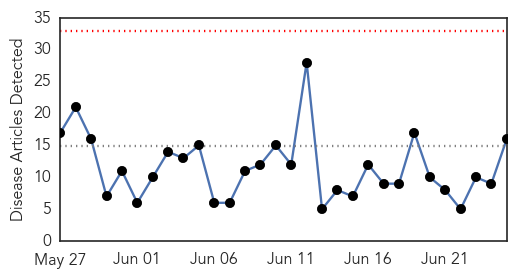

30 Day Trends
Web: 0 alerts, 0 warnings
Twitter: 0 alerts, 0 warnings
Top Articles:
- 0.996
- Virus mutations: Here’s why scientists say last year’s flu vaccine was a bust - National
- 0.988
- A mutation may explain why last year’s flu vaccine failed for so many
- 0.971
- Health experts warn of severe flu season
- 0.963
- Not too late for flu shot amid severe influenza season, experts say
- 0.963
- It's not too late for flu jab, say doctors
- 0.949
- Ghanaian Media Asked to Spread Awareness of Avian Flu
- 0.923
- Single mutation sabotaged last year's flu vaccine
- 0.751
- June 25, 2015 Archives
- 0.751
- June 24, 2015 Archives
- 0.751
- June 24, 2015 Archives
- 0.751
- June 24, 2015 Archives
- 0.751
- June 24, 2015 Archives
- 0.751
- June 24, 2015 Archives
- 0.751
- June 24, 2015 Archives
- 0.751
- June 24, 2015 Archives
- 0.694
- Bird flu causes cancellation of poultry shows
Top Tweets:
-
No tweets found for Jun 25, 2015
Web/News Articles
Tweets

Article Locations